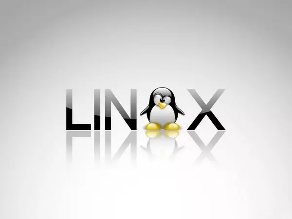

Um sistema operacional (SO) é um software fundamental que gerencia o hardware e os recursos de um computador, além de fornecer serviços essenciais para que outros programas possam funcionar. Ele atua como uma ponte entre o usuário e o hardware do computador, facilitando a execução de tarefas e garantindo que os recursos sejam utilizados de forma eficiente. Funções principais de um sistema operacional: Gerenciamento de Processos: Controla os programas em execução, aloca tempo de processamento da CPU e garante que eles sejam executados de forma ordenada. Gerenciamento de Memória: Organiza a memória RAM, garantindo que os aplicativos em execução tenham o espaço necessário para funcionar. Gerenciamento de Armazenamento: Controla como os dados são armazenados e acessados no disco rígido ou em outros dispositivos de armazenamento. Gerenciamento de Dispositivos: Coordena a comunicação entre o computador e seus periféricos, como teclado, mouse, impressoras e outros. Interface com o Usuário: Oferece uma interface gráfica (GUI) ou linha de comando (CLI) para que o usuário interaja com o sistema. Exemplos de sistemas operacionais: Windows (Microsoft) Linux (ex.: Ubuntu, Fedora, Debian) macOS (Apple) Android e iOS (para dispositivos móveis) Os sistemas operacionais são indispensáveis para o funcionamento de qualquer dispositivo, seja ele um computador, smartphone ou até mesmo um eletrodoméstico moderno.

Linux O Linux® é um sistema operacional open source criado pela Linus Torvalds em 1991. Atualmente, conta com uma base de usuários massiva e é usado nos 500 supercomputadores mais potentes do mundo. Os usuários aderem a ele devido aos seus recursos de segurança e versatilidade, entre outros motivos. O kernel do Linux é mantido por uma comunidade mundial de entusiastas open source e tem centenas de distribuições únicas. O Linux foi desenvolvido para ser semelhante ao UNIX, mas evoluiu e passou a ser executado em uma grande variedade de hardwares, de telefones a supercomputadores. Todo sistema operacional baseado em Linux inclui o kernel do Linux, que gerencia recursos de hardware, e um conjunto de pacotes de software que compõem o restante do sistema operacional. As organizações também podem optar por executar o sistema operacional Linux em um servidor Linux. O Linux inclui alguns componentes principais comuns, como ferramentas GNU e outras. Essas ferramentas oferecem ao usuário uma forma de gerenciar os recursos fornecidos pelo kernel, instalar software adicional, definir configurações de desempenho e segurança, entre outras coisas. Todas essas ferramentas juntas compõem o sistema operacional funcional. Como o Linux é um sistema operacional open source, as combinações de software podem variar entre as distribuições Linux.
-FreeBSD FreeBSD é um sistema operacional de código aberto baseado no Unix. Embora seja frequentemente comparado ao Linux, o FreeBSD tem um núcleo e um sistema de gestão de pacotes próprios. Ele é conhecido por sua estabilidade e desempenho, sendo amplamente usado em servidores. Excelente em servidores e sistemas embarcados, com uma abordagem diferente do Linux. -OpenBSD Famoso por sua segurança robusta, o OpenBSD é uma distribuição baseada no BSD (Berkeley Software Distribution). Ele tem como foco a segurança, a simplicidade e o código auditado. Famoso por ser extremamente seguro, utilizado em servidores e firewalls. -NetBSD NetBSD é outro sistema operacional baseado em BSD, mas com um foco maior em portabilidade e suporte para uma grande variedade de plataformas e arquiteturas de hardware. Um dos sistemas mais portáveis, com suporte para muitas arquiteturas e dispositivos.
Windows é um sistema operacional de multitarefas para computadores e dispositivos móveis desenvolvido pela Microsoft. A palavra Windows significa literalmente “janelas”, na tradução do inglês para o português.
Considerado um dos sistemas operacionais mais utilizados em todo o mundo, o Windows começou a ser projetado em 1981, mas foi apenas em 1993 que sua primeira versão foi lançada.
Inicialmente, o Windows oferecia apenas uma interface gráfica, funcionando unicamente em programas em modo gráfico. Desde então, este sistema operacional tem evoluído, tanto em termos de funcionalidades, design e eficiência. Até o momento, o Microsoft já conta com dezenas de atualizações, sendo as mais conhecidas: Windows 95, Windows 98, Windows 2000, Windows XP, Windows Vista e, mais recentemente, o Windows 11.
Existem diversos produtos que compõem a “família” Microsoft Windows: Windows Live, Windows Media Center, Windows Media Player, entre outros. Estes softwares foram desenvolvidos exclusivamente para potencializar o desempenho dos sistemas operacionais produzidos pela Microsoft.
A função do sistema operacional do Windows é facilitar o acesso do usuário ao computador. Para tanto, utiliza interfaces eficientes, atrativas e fáceis de utilizar, além de integrar softwares mais rápidos e eficazes.
-Ios O iOS é o sistema operacional móvel da Apple. O software é utilizado no iPhone, com o variante iPadOS no iPad , além de fazer integração com outros sistemas da marca, como o macOS, do Mac, e o tvOS, da Apple TV. A primeira versão do iOS foi lançada em 2007 com o objetivo de dar praticidade às operações básicas dos smartphones da maçã e ser um sistema mais funcional em relação ao Android, principal concorrente. -Mac os O MacOS é um sistema operacional baseado em Unix, desenvolvido pela Apple para seus computadores pessoais da linha Macintosh. Estamos falando de mais de quarenta anos de legado. Sua primeira versão foi lançada em 1984, e desde então, o MacOS passou por várias atualizações, evoluindo em termos de desempenho, segurança e usabilidade. A essência do MacOS é proporcionar uma experiência de usuário intuitiva e integrada aos dispositivos da Apple – esses, sim, desenvolvidos de maneira pioneira ao longo do tempo. -Android O Android é um sistema operacional móvel desenvolvido pela Google. Ele foi projetado principalmente para dispositivos móveis, como smartphones, tablets, smartwatches e smart TVs. O Android oferece uma plataforma aberta e flexível que permite aos fabricantes de dispositivos personalizarem e adaptarem o sistema operacional de acordo com suas necessidades. A principal função do Android é fornecer um ambiente operacional completo para dispositivos móveis. Ele gerencia o hardware do dispositivo, como processadores, memória, tela sensível ao toque, câmera, sensores, conectividade e muito mais. O Android fornece uma interface de usuário intuitiva e interativa, permitindo que os usuários acessem aplicativos, serviços e recursos do dispositivo.
-Word O Microsoft Word é um poderoso programa de processamento de texto que permite criar documentos como cartas, papéis, relatórios e muito mais. Ele faz parte do Microsoft Office Suite, que permite que você compartilhe seus documentos com outras pessoas, armazene-os em um local seguro baseado em nuvem e acesse-os de qualquer dispositivo. Com sua interface intuitiva e conjuntos de ferramentas abrangentes, é fácil criar documentos com aparência profissional de forma rápida e eficiente. Como faço para começar a usar o Microsoft Word? Começar a usar o Microsoft Word é simples! Basta comprar ou baixar o programa em seu dispositivo; se você tiver uma assinatura do Office 365, já terá acesso a ela. Uma vez instalado em seu computador ou dispositivo móvel, abra o aplicativo e comece a explorar seus recursos. Você também pode encontrar inúmeros cursos e tutoriais on-line para ajudá-lo a aprender a usar o programa de forma eficaz.
O Excel é um poderoso programa de software da Microsoft que pode ajudá -lo a organizar, analisar e compartilhar seus dados.Faz parte do Microsoft Office Suite e está disponível para computadores Windows.Com o Excel, você pode organizar dados em linhas e colunas e depois usar fórmulas para calcular os valores em cada célula.Você também pode criar gráficos que visualizam tendências em seus dados ou adicionam imagens e imagens para torná -las mais visualmente atraentes.O Excel é uma ferramenta essencial para empresas, profissionais financeiros e usuários cotidianos. Como faço para começar com o Excel? Introdução ao Excel é fácil!Primeiro, faça o download do programa no seu PC (computadores pessoais).Faz parte da suíte do Microsoft Office, para que você já o instale.Em seguida, abra uma planilha em branco lançando o programa.Você pode inserir dados manualmente ou importá -los de outra fonte, como um arquivo CSV (valores separados por vírgula) ou outro programa como o Access.Depois de inserir seus dados, use fórmulas para calcular valores e criar planilhas ou gráficos úteis que ajudem a visualizar as tendências em suas informações.
.png)
JavaScript JavaScript é uma linguagem de programação usada por desenvolvedores para fazer páginas interativas da Internet. As funções de JavaScript podem melhorar a experiência do usuário durante a navegação em um site, como, por exemplo, desde a atualização do feed na página da mídia social até a exibição de animações e mapas interativos. Como uma linguagem de script do lado do cliente, ele é uma das tecnologias principais da World Wide Web. Por exemplo, ao navegar na Internet, é possível visualizar a qualquer momento um carrossel de imagens, um menu suspenso “clicar para visualizar” ou mesmo mudar dinamicamente as cores dos elementos de uma página da Web. Tudo isso graças ao JavaScript. Qual a utilidade do JavaScript? Anteriormente, as páginas da Web eram estáticas como páginas em um livro. Uma página estática exibia basicamente informações em um layout fixo e não fazia tudo que esperamos de um site moderno hoje em dia. O JavaScript surgiu como uma tecnologia do lado do navegador para tornar as aplicações Web mais dinâmicas. Ao usar JavaScript, os navegadores passaram a ser capazes de responder a interações do usuário e alterar o layout do conteúdo na página. À medida que a linguagem amadureceu, desenvolvedores de JavaScript estabeleceram bibliotecas, frameworks e práticas de programação, além de começar a usá-la fora dos navegadores da Web. Hoje em dia, é possível usar JavaScript para desenvolvimento tanto do lado do cliente quanto do lado do servidor. Nas próximas subseções, apresentamos alguns casos de uso comuns:

O C# é uma tecnologia da Microsoft, associada ao Visual Studio, usada para propósitos gerais. É uma linguagem muito parecida com o Java em muitos quesitos, como veremos em detalhes a seguir. Principais características da linguagem C# O C# é o que chamamos de linguagem fortemente tipada. Isso significa que seus tipos de dados são fixos e que não são alteráveis com facilidade. Em uma melhor explicação: se a gente define uma variável como numérica, não será possível atribuir caracteres a ela em outro ponto do código